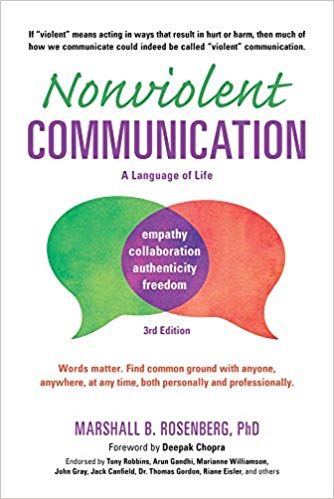
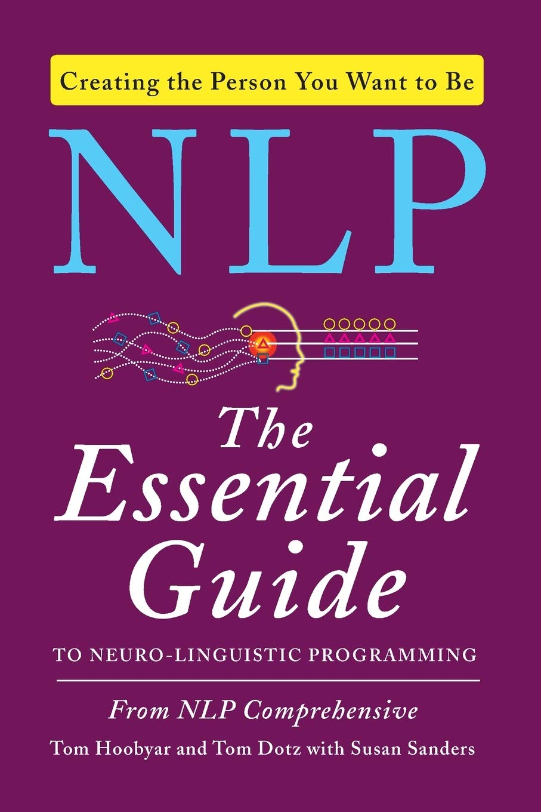

class: center, middle, splash # Effective Leadership and Soft Skills ### for Engineers. --- class: center, middle # Manager vs. Leader? --- class: center, middle # Leaders do not necessarily have formal authority over their **followers**. ??? - You do not need to have SENIOR title or whatever. You can start leading from day 1! - Although experience shows that leaders quickly get senior titles and authority --- class: center, middle ![:ribbon Exercise, small] # Why people follow leaders? ??? - **Competition**: Why people follow the leaders then?! - Vision of Better Future - Competence - Confident - Self-aware (Beliefs and Values). They determine who will follow you and who will not. - Supportive! - Skepticism (luther king) --- ![:ribbon Homework, small] # Weekly retrospective — ### 🟢 3 things that I did well as a leader? ### 🔴 3 things that I am not particularly proud of? ### 🟡 3 things I am going to do next week to become a better leader? ??? - bonus: manage up, down, sideways - spotify health --- class: center, middle, splash # Acquiring Followers --- class: center, middle # Story time ??? - The most technical guy with the worst team feedback. Why should they support you? - Selfish. - One man army - Gov Election --- class: center, middle # You succeed faster by helping people around succeed. --- class: center, middle # PageRank. --- class: center, middle # Help peers achive their goals. ### (it pays off, because in IT everyone grows fast and reputation is a new currency) --- class: center, middle ![:ribbon Exercise, small] # How can you help peers achieve their goals? ??? - Actually having time for them. - Listening. - Energizing. - Pairing with a more experienced person - Turning a person into a mentor/trainer - Asking: what can I do to help you do your best work? - Spreading optimism and good vibes - Sharing books - Sharing success - Delegating tasks that maximize learning --- class: center, middle ![:ribbon Exercise, small] # How can you boost PageRank outside of your team? ### 💡 Developers fall into your comfort zone. High page rank is usually elsewhere. --- class: center, middle ## But how do I know what people want? 🤔 --- class: center, middle # HTC Rule. ??? talk to them. like good friends do. --- class: center, middle ## Everyone is motivated at something. It just depends on the thing. Even the people that we think are “unmotivated” are suddenly really motivated when they’re playing video games. ### — Naval Ravikant --- class: center, middle ## The royal road to a person's heart is to talk to them about the things they treasure most. ### — Dale Carnegie --- # One-on-ones -- ### - Regular (no less than once in two weeks) -- ### - Informal (no boring check-lists, more listening) -- ### - Valuable (no fluff) -- ### - Actionable (todos) -- ### - Empathetic (you actually care) -- ### - Bidirectional (feedback from both sides) --- class: center, middle ![:ribbon Homework, small] # Scheduled one-on-ones with your teammates. --- class: center, middle, splash # The Power of Appreciation --- class: center, middle # The #1 reason people leave their job is lack of appreciation ### (Accenture. IWD 2013 Report. p. 29) --- class: center, middle, almostblack <iframe width="853" height="480" src="https://www.youtube.com/embed/R-LtZMkTvzA" frameborder="0" allowfullscreen></iframe> --- class: center, middle # 2 Magic Words ### never wrong - never inappropriate - never useless - often forgotten ??? - The cheapest and the most effective way to appreciate someone. --- class: center ### Thanks. --- class: center ### Thanks. ### Thank you! --- class: center ### Thanks. ### Thank you! ## Thank you, **John**! --- class: center ### Thanks. ### Thank you! ## Thank you, **John**! # Thank you, John! Fixing such an annoying Heisenbug was a masterpiece! --- class: bad, center, middle # Thank you, John! Finally someone found courage and fixed this annoying Heisenbug! --- class: center, middle  --- background-image:url(kudobox.jpg) ??? Thanksbooster = Public Thanks. --- background-image:url(kudowall.jpg) --- class: center, middle background-image:url(disco.png) --- class: center, middle ## But how do I know if people feel appreciated enough? 🤔 --- ### - One-on-ones -- ### - Anonymous surveys (NPS) -- ### - Spotify Health --- class: center, middle background-image:url(spotify.png) --- class: center, middle background-size: contain background-image:url(spotify2.jpeg) --- class: center, middle, splash # Communication techniques ??? there are hunders of them, so my goal here is make you interested in. --- class: center, middle # Use **WE** to connect with others (bridge the gap). # .strike[YOU], .strike[HE], .strike[SHE], .strike[THEY] --- class: center, middle, bad # Unfortunately you don't see the full picture ??? I am better than you. --- class: center, middle, oki # Unfortunately we don't see the full picture ??? We are equal. --- class: center, middle, bad # I think he has disclosed strictly confidential information. What can we do about it? ??? blame --- class: center, middle, oki # I think we have disclosed strictly confidential information. What can we do about it? ??? no blame --- class: center, middle, bad # Business doesn't understand how to work with us. ??? increasing the gap --- class: center, middle, oki # We don't understand how to work together. How can we do better? ??? bridging the gap --- background-image:url(bridge_the_gap.png) ??? internet is a nice place to practice communication. --- class: splash background-image:url(intrum_box.jpg) ??? - be a policeman. - suggestions must be open, maybe voted. --- ![:ribbon Exercise, small] ## Deal with situations without offending the person: ### *1. "You don't fully understand the consequences."* ### *2. "I don't think you hear what I am saying."* ### *3. "Alex was too closed-minded. He didn't accept my solution."* ### *4. "Don't call it TDD. The better name is just unit testing."* ### *5. "When they change priorities so often, we can't deliver anything."* --- class: center, middle, invert background-image:url(tyrion.jpg) # Before you talk, think about what goal you want to achieve, and whether what you'll say is bringing you closer to the goal. --- class: center, middle, invert background-image:url(tyrion.jpg) # WAIT Rule. --- class: center, middle, bad ### After you get the job offer: # — Thank you for this amazing job offer. That was unexpected! --- class: center, middle, bad ### When someone has failed: # — You see! I said to you it won't work! --- class: center, middle, bad ### When manager is complaining: # — John, I think Alex from your team is a low-performer. # — Yeah, he is not the best guy, but... --- class: center, middle, bad ### When manager is complaining: # — John, I think Alex from your team is a low-performer. # — No, he is a high performer. --- class: bad ``` Hi Ed, I am .............., I'm searching for Java expert to teach us advanced Java training. I saw your amazing training. Do you have a plan for 2 weeks training that consist of your course plus other topics: - Modular Java - Java Performance Tuning and Optimization - Software architecture, Analysis and Design - TDD, DDD, or latest Java best practice Our current environment is .................. Duration: 2 weeks Location: on-premises Number of Trainees: 5 Please estimate a Fee per person This is still a plan, I have to propose it to my boss. Thank you Kind regards, ``` --- class: center, middle, bad ### My mother-in-law # — Ed, if you return Julia, I'll understand. --- class: center, middle  --- class: center, middle  --- class: center, middle  --- class: center, middle  --- class: center, middle # Reverse WAIT. ### Recognize the goal behind (usually wrong or emotional) words/actions. --- class: center, middle # "You're always busy!" --- class: center, middle # Chief Security Officer has revoked developers' production access rights 😠. --- class: center, middle # Test Engineers do not support developers' proposal to do most of the testing. --- class: center, middle # When someone is sharing his story with you (for hours)... ??? want solution? want opinion? NO! just want to be heard! --- class: center, middle # When someone is raising the voice on you ??? - sometimes he wants something good for you (even offending you) --- # How to recognize the goal? -- ### Think of human needs. Avoid labeling (bad, lazy, inadequate, unmotivated, unsupportive, selfish...) -- ### Listen more. Talk less. -- ### Ask. Don't assume. ??? - "what's the goal?" "why are you saying this?" - even if someone gives you an answer, recognize the goal behind the goal (5 whys)? -- ### 2nd person view (what's going on in that person’s world for this to make sense?) -- ### 3rd person view (zooming out) ??? ok, 2 guys are sitting next to each other and fighting (not me!) --- ![:ribbon Exercise, small] # Let's collect... ## 1) Things that influence human behaviour and perception ## 2) Human needs ## 3) Tips to get better at #1 and #2 over time ??? - timing - mood - stress - environment - pressure (team, social) - other problems we have - our limited perspective --- class: center, middle <table align="center"> <tr> <td></td> <td></td> </tr> </table> ## **Because I was expecting to see something, I didn’t see what was right in front of me.** — NLP, The Essential Guide --- # In conversations, make others **interesting** by being **interested**. ??? - People like to be heard and like being felt interesting. - when someone is talking, you are learning -- ### - "wow! what happened next?" -- ### - "can you tell me more about the solution?" -- ### – "did I understand correctly that ...?" -- ### – Nodding -- ### – Looking with curiocity -- ### – Parroting ("then the script killed the production!” all you have to say is "killed the production?") --- # Albert Mehrabian's Rule: ### ___% Body language (movements, gestures, face...) ### ___% Voice (tone, pauses) ### ___% Words --- # Albert Mehrabian's Rule: ### 55% Body language (movements, gestures, face...) ### 30% Voice (tone, pauses) ### 7% Words -- # How to learn? -- ### - Being mindful about what you say, how you say it, your body language and voice. -- ### - NVC and NLP books. -- ### - Public speaking. --- class: center, middle ![:ribbon Demo, small] # The body language ??? - Where do you sit? (close, nothing in between, you against the issue) - what if you are forced to sit far from someone? (say that you'd like to sit closer!) - voice --- class: center, middle ![:ribbon Homework, small] ## For the next two week, try to be mindful about your and others' body language. Connect what you see with what you and others say/feel. ### posture • movements • hands • distance • face expressions --- class: center, middle # Secret tips & tricks --- class: center, middle # Stand up! ??? - When you are talking with more than 1 person - STAND UP! Especially if everyone is sitting down. - Standing up communicates authority and self-confidence, makes you contorl the room. - It will force you to use your body language, people will interrupt you less. --- class: center, middle # Touch! ??? - high fives as well, pat on the shoulder. - touch releases oxytocin (oksitoucin) in the recipient’s brain - safer, relax, connection, brings us closer. - waitresses get higher tips, petition gatherers get more signatures. --- class: center, middle ## Emotional intelligence (also known as EQ) is a person's ability to recognize emotions, understand their powerful effect, and use that information to guide thinking and behavior. .hide[**Since EQ helps you understand yourself and others better, EQ is a better indicator of success in the workplace and life than IQ.**] --- class: center, middle ## Emotional intelligence (also known as EQ) is a person's ability to recognize emotions, understand their powerful effect, and use that information to guide thinking and behavior. **Since EQ helps you understand yourself and others better, EQ is a better indicator of success in the workplace and life than IQ.** --- class: center, middle # The best way to boost EQ is through mindfulness meditation. ### (10-15 minutes a day). ### --- class: center, middle # The best way to boost EQ is through mindfulness meditation. ### (10-15 minutes a day). ### reduces anxiety • relieves stress • better response to events • improves sleep • makes you happier --- class: center, middle ![:ribbon Exercise, small] ### ❤️ Let's try mindfulness meditation in practice. --- background-image:url(headspace.jpg) background-size: contain ??? - youtube.com/watch?v=W19PdslW7iw&t=97s --- class: center, middle, splash # Encouragement. --- class: center, middle, almostblack <video height="500" controls> <source src="jump_to_conclusions.mp4" type="video/mp4"> Your browser does not support the video tag. </video> --- class: bad, center, middle ## — Let's use Docker on production? ## — We've tried already and it didn't work. ??? - Killed idea - Killed future ideas (no appreciation here) - Feel wrong and stupid --- class: oki, center, middle ## — Let's use Docker on production? ## — Thanks for raising this! Have you though about monitoring and troubleshooting challenges? We had serious problems with it! ??? - give credit- - the power of question! Keeps idea alive. Motivates for more ideas. Challenge - what if she find a solution? --- class: bad, center, middle ## — Let's replace all tabs with spaces!!! ## — Interesting idea, but do you know that it will obfuscate all code history? ??? Killed with BUT --- class: center, middle, almostblack <video height="500" controls> <source src="but_got.mp4" type="video/mp4"> Your browser does not support the video tag. </video> --- class: bad, center, middle ## — Let's replace all tabs with spaces!!! ## — Interesting idea. Check whether it will obfuscate all code history. ??? Killed with BUT --- class: oki, center, middle ## — Let's reformat the code and replace tabs with spaces!!! ## — Interesting idea! How would it impact our code history? --- class: bad, center, middle ## — Let's switch from JIRA to Trello ## — Trello is for small companies. I don't think it will work out! ??? Make you smarter than your peer. Kills the idea. You are one to blame (NEVER BE JUDGE!!!) --- class: oki, center, middle ## — Let's switch from JIRA to Trello ## — Thanks for raising this. I have heard some good things about Trello. Can you create a demo using real user stories from JIRA? --- class: oki, center, middle ## — Let's switch from JIRA to Trello ## — Thanks for raising this. I have heard some good things about Trello. Can you create a demo using real user stories from JIRA? **If the team buys it, I can help convincing CEO.** --- class: center, middle, almostblack <iframe width="853" height="480" src="https://www.youtube.com/embed/fW8amMCVAJQ" frameborder="0" allowfullscreen></iframe> ??? - being a follower is important. Many followers – goal achieved. - disagree, but commit --- class: center, middle ## Either lead, follow, or get out of the way. It’s okay to shoot holes in things as long as you come up with a solution. ### — Naval Ravikant --- class: center, middle, splash # Commitment language --- class: center, middle, bad # We need to get this done --- class: center, middle, bad # I hope to get this done by tomorrow --- class: center, middle, bad # I will do all my best to attend the meeting --- class: center, middle, bad # I am 80% sure. --- class: center, middle, bad # I can send you the docs by end of the week. ??? – I can send, but chances are I will not send you. --- class: center, middle, bad # 10th of March should be ok, unless I will have an immediate business trip (fingers crossed) --- class: center, middle, oki # I will ... ### (OK, but still unclear when) --- class: center, middle, oki # I will -------- by -------- ### (may require polling, 2 people involved) --- class: center, middle, oki # I will -------- by -------- and drop you a message ### (1 person involved) --- class: middle, center, bad # - Johnny, can you clean up this mess? --- class: middle, center, bad # - Johnny, will you clean up this mess? --- class: middle, center, oki # - Johnny, will you clean up this mess before pushing the code? ??? - You can stop a person and ask him - will you do it? - "of I can't because". You found an impediment! Fix and replay. --- class: middle, center, bad # We'll try delivering this in the current sprint. --- class: middle, center, oki # We will deliver this in the current sprint. --- class: img100 # Close the backdoor: --  --  --  --  --  --  --  --- class: center, middle # Ask commitment from specific people. --- class: center, middle, bad ## **@channel** who is going to show our product demo this Friday? ### --- class: center, middle, oki ## **@johnny** what if you take leadership over product demo this Friday? ### --- class: center, middle, oki ## **@johnny** ready to lead product demo this Friday? **it's your turn!** ### pro-tip: good and well-known rules reduce unnecessary communication --- class: middle, bad ## — **@johnny** ready to lead product demo this Friday? it's your turn! ## — Holy sh%t! I will be on vacation... --- class: center, middle # **What did I do to solve the problem**? --- class: middle, bad ## — **@johnny** ready to lead product demo this Friday? it's your turn! ## — Holy sh%t! I will be on vacation... --- class: middle, oki ## — **@johnny** ready to lead product demo this Friday? it's your turn! ## — Holy sh%t! I will be on vacation... No worries, I will find a replacement. --- class: middle, bad ## — **@johnny** will you implement all 3 features in the next Sprint? ## — Sorry, it's too much. --- class: middle, oki ## — **@team** will you implement all 3 features in the next Sprint? ## — Impossible without adjusting the Sprint. What we can do instead is take feature 1 and implement 2 and 3 in the next Sprint. Alternatively, let's reduce current scope to squeeze 1, 2 and 3 in. The choice is yours. ??? provide options --- class: middle, bad ## — **@johnny** will you help me onboard Alex? He is joining next week. ## — Sorry, not my responsibility. --- class: middle, oki ## — **@johnny** will you help me onboard Alex? He is joining next week. ## — Sure thing, but it will take long time. Let me check what Jack is doing, as he has more expertise. I will let you know who'll take over tomorrow noon. --- class: center, middle, bad # I can't give you the estimate now. .hide[I will talk to the team today and get back to you tommorrow.] --- class: center, middle, oki # I can't give you the estimate now. I will talk to the team today and get back to you tommorrow. --- class: center, middle, bad # Sorry, I have no clue what's the status of the issue. .hide[I will figure it out by tomorrow and will let know.] --- class: center, middle, oki # Sorry, I have no clue what's the status of the issue. I will figure it out by tomorrow and will let know. ??? give date for a date. --- background-image:url(nutcache.png) --- class: height100 background-image:url(freshbooks.png) --- class: center, middle ## What if people are distracting me all the time? 🤔 --- class: center, middle, splash # Coaching --- class: center, middle # How can I make this code cleaner? --- class: center, middle, bad # OK, let's see... --- class: center, middle, oki # What options do you see? --- class: center, middle # Where are the passwords located? --- class: center, middle, bad # Have you searched in Wiki? --- class: center, middle, oki # Let me challenge you – where did you look already? --- class: center, middle # John writes crappy code. It's killing me. --- class: center, middle, bad # Have you tried talking with John? --- class: center, middle, oki # What are you going to do about it? --- class: center, middle, splash # Proposing a change --- class: center, middle ![:ribbon Exercise, small] # Propose introducing new chat system to CEO. Currently the company is using email for communication. --- class: center, middle # What's important when proposing a change? --- ### - Give facts / data -- ### - Say others support the idea -- ### - Speak my benefit language (what problems do I have? what I care about?) -- ### - Small change, no revolution, rollback plan -- ### - Make it clear what should I do (no brainer) -- ### - Provide assistance for me -- ### - Show confidence -- ### - Show something working --- class: center, middle ![:ribbon Exercise, small] # Repeat! --- class: center, middle, splash # How to deal with unsuppostive teammates --- class: center, middle # Make them feel VIP and involved. ??? - Ask for Help - Ask for Opinion - People don’t want to be told what to do. They want to be asked. --- class: center, middle # Beer-Driven Diplomacy ### (when trying to persuade, decrease intensity) ??? - How do you feel about this solution? - What changes would you like to see that would make the agreement more acceptable, more fair - Because they feel heard, they’re likely to tell you more. --- class: center, middle # Just build it. ### (and demo to those who is paying) ??? a story of successful prototype. --- class: center, middle, splash # Influence and Persuation  --- # Seven forces of influence -- ### - Authority -- ### - Belonging -- ### - Commitment/Consistency -- ### - Liking -- ### - Reciprocity -- ### 💡 In social psychology, reciprocity is a social norm of responding to a positive action with another positive action, rewarding kind actions. -- **As a social construct, reciprocity means that in response to friendly actions, people are frequently much nicer and much more cooperative than predicted by the self-interest model.** --- # Seven forces of influence ### - Authority ### - Belonging ### - Commitment/Consistency ### - Liking ### - Reciprocity ### - Social Proof -- ### - Scarcity --- class: center, middle, splash # Motivation and DRIVE .right-abs[] --- background-size: 70% background-image:url(umbrella.png) --- class: center, middle, splash # Wrapping up... --- class: center, middle ## Leadership is not necessarily about big things... ### 🍿 **dev.tube/video/3PcL8UkorEg** --- class: center, middle ## Leaders Eat Last. ### 💡 leaders delegate the most interesting work to others. ??? you should enjoy seeing your people working on the coolest project more than you doing coolest project. --- class: center, middle ## Leadership means **serving** people so they get maximum **DRIVE**. ### autonomy - mastery - purpose --- # What's next? ## ## [sizovs.net](https://sizovs.net) ## [softskills.audio](https://softskills.audio) ## [devternity.com](https://devternity.com) ## [principal.dev](https://principal.dev) (next level) --- class: center, middle # Thank you! ??? Don't struggle! Enjoy your life! Be whateve you want to be!